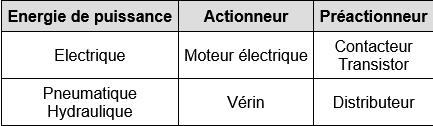

07 Informatique embarquée, objects connectés
La fiche connaissances
(Très très (mais alors très) inspirée de l'excellent site :
eleydet.free.fr)
Introduction
Un système électronique traite des signaux d'entrée pour produire des signaux de sortie. Si les systèmes câblés étaient très communs autrefois, ils ont tendance à être remplacés par des systèmes programmés, plus flexibles et économiques.

crédits : E Leydet
Informatique embarquée
Définition n°1 : informatique embarquée
Selon la définition de Wikipédia, on désigne sous le terme informatique embarquée les aspects logiciels se trouvant à l'intérieur des équipements n'ayant pas une vocation purement informatique. L'ensemble logiciel, matériel intégré dans un équipement constitue un système embarqué. L'informatique embarquée est omniprésente : Appareils électroménager, téléphone portable, automobile...
En résumé : Un système embarqué est un objet, autre qu'un ordinateur personnel (PC), à l'intérieur duquel on a placé de l'informatique pour le contrôler.
Exemple n°1 : Exemples de système à informatique embarquée
Smartphone, montre de sport, métro automatique, régulateur de température...
Un peu d'histoire :
L'un des premiers systèmes modernes embarqués reconnaissables a été le
Apollo Guidance Computer en 1967, le système de guidage de la mission lunaire Apollo, développé par Charles Stark Draper du Massachusetts Institute of Technology.
Les 4004 sont sortis dans un boîtier DIP à seize broches en céramique le 15 novembre 1971 . C'est la première fois que toutes les fonctions d'un processeur sont réunies sur un seul et unique circuit intégré, ce qui en fait le premier microprocesseur de l'histoire et de l'industrie.

Crédits : Thomas Nguyen/Wikimedia
Connaissance n°1 : Structure d'un système embarqué
Dans sa forme basique, un système embarqué comporte quatre parties :
- L'unité de traitement.
- Les capteurs.
- Les actionneurs et préactionneurs.
- La source d'énergie.
crédits : E Leydet
L'ajout d'une IHM (interface homme-machine) permet à un utilisateur de dialoguer avec le système embarqué.
crédits : E Leydet
Connaissance n°2 : Unités de traitement
L'unité de traitement est le système qui envoie des données aux préactionneurs en fonction des données provenant des capteurs et, le cas échéant, de l'IHM. Elle est basée sur un circuit intégré (ou puce électronique) qui peut être :
- Un microcontrôleur : Il fait fonctionner un seul programme à la fois.
- Un microprocesseur : Il fait fonctionner plusieurs programmes en même temps.
Connaissance n°3 : Capteurs
Un capteur mesure une grandeur physique (pression, tension, courant, fréquence...) pour la convertir en un signal électrique compréhensible par l'unité de traitement.
La grandeur physique :
- Se mesure : Longueur, pression, tension, courant, fréquence...
- Est dotée d’une unité : Mètre, bar, volt, ampère, hertz...
- Varie au cours du temps.
- Véhicule de l'information.
Selon l'emplacement de l'élément à mesurer, un capteur peut être :
- Proprioceptif : Le capteur mesure l’état interne du système.
- Extéroceptif : Le capteur mesure l’état de l'environnement du système.
Selon le signal de sortie, un capteur peut être :
- Logique : Le signal prend deux valeurs, un niveau haut et un niveau bas.
- Analogique : Le signal prend toutes les valeurs comprises entre un maximum et un minimum.
- Numérique : Le signal prend un nombre fini de valeurs.
crédits : E Leydet
Exemple n°2 : Exemples de capteur
Thermomètre, caméra, sonde, anémomètre, pressionmètre, microphone, puce GPS, magnétomètre, détecteur de mouvement...
Connaissance n°4 : Actionneurs et préactionneurs
L'unité de traitement traite des signaux de très faible puissance. Elle ne peut alimenter directement les actionneurs qui consomment une forte puissance. Le préactionneur sert d'intermédiaire entre l'unité de traitement et l'actionneur. Il distribue l'énergie de puissance vers l'actionneur selon le signal de commande qu'il reçoit.
crédits : E Leydet
Définition n°2 : Actionneur
Système qui convertit l'énergie de puissance en une énergie utile pour la machine.
Exemple n°3 : Exemples d'actionneur
Lampes, moteur, verin, résistance chauffante (radiateur électrique par exemple)
Définition n°3 : Préactionneur
Système qui distribue l'énergie disponible vers un actionneur selon le signal de commande.
Exemple n°4 :

crédits : E Leydet
Connaissance n°5 : IHM
L'interface homme-machine permet à l'utilisateur de dialoguer avec le système embarqué. Elle peut comporter :
- Des boutons-poussoirs, des voyants, des bipeurs dans sa forme basique.
- Un clavier, un écran éventuellement tactile, des message vocaux dans une forme plus évoluée.
- Un système de reconnaissance faciale ou gestuelle avec synthèse vocale dans sa forme futuriste.
Objets connectés
Connaissance n°6 : Structure d'un objet connecté
Une interface réseau, système qui adapte les signaux transmis sur le réseau aux signaux gérés par l'unité de traitement, complète la structure du système embarqué.
crédits : E Leydet
Définition n°4 : Internet des objets
Une interface réseau, système qui adapte les signaux transmis sur le réseau aux signaux gérés par l'unité de traitement, complète la structure du système embarqué.
Définition n°5 : Web des objets
Le Web des objets désigne l'ensemble des objets contrôlés via le Web.
Définition n°6 : Communication de machine à machine
Le M2M (Machine to Machine) désigne la communication directe entre des machines sans intervention humaine.
Définition n°7 : Domotique
La domotique est l’ensemble des techniques d’automatisation et d’informatisation des tâches dans une maison. Il existe de nombreux objets connectés dans le domaine de la domotique, comme le régulateur de température, la fermeture automatique des volets, etc...
Connaissance n°7 : La sécurité
Interconnecter des objets très divers sur un même réseau de communication les rend potentiellement accessibles à distance, de manière difficilement visible et traçable. La multiplication des objets connectés, la variété des domaines qu'ils occupent, la rapidité de leur développement et l'essor des nouvelles technologies peuvent également les rendre rapidement obsolètes.
Se posent alors des problèmes de cybersécurité qui nécessitent de coûteux et permanents efforts de sécurisation. Domotique, voitures connectées à pilotage automatique, industries, hôpitaux, administrations, etc., tous peuvent être potentiellement victimes d'intrusions susceptibles de provoquer une mise en danger ou la fuite de données personnelles ou sensibles.
Par ailleurs, la grande dépendance à Internet rend les objets connectés particulièrement vulnérables à des pannes de serveurs. Si en plus ces objets ne comportent que des IHM passant par Internet, leur fonctionnement peut être totalement bloqué.
Un peu de vocabulaire à connaitre
Définition n°8 : Porte dérobée (backdoor en anglais)
C'est une fonctionnalité inconnue de l'utilisateur permettant au fabriquant de prendre le contrôle de l'objet, pour toutes sortes d'usages. Elle peut être matérielle (incorporée au circuit intégré) ou logicielle.
Définition n°9 : Obsolescence logicielle
C'est une fonctionnalité inconnue de l'utilisateur provoquant un mode dégradé, une panne partielle ou complète de l'objet au bout d'un certain temps ou d'un certain nombre d'utilisations.
Définition n°10 : Limitation logicielle
C'est une fonctionnalité restreignant l'usage l'objet.
Définition n°11 : Bug
C'est un défaut de programmation engendrant un dysfonctionnement en certaines circonstances.
Définition n°12 : Faille de sécurité
C'est une faiblesse de programmation permettant aux pirates de prendre le contrôle de l'objet, pour toutes sortes d'usages (fabrication de bitcoins...).
Définition n°13 : Mouchard ou logiciel espion (spyware en anglais)
C'est un logiciel permettant aux pirates d'espionner, de tracer l'activité.
Définition n°14 : Rançongiciel (ransomware en anglais)
Ce logiciel chiffre les données personnelles puis demande à leur propriétaire d'envoyer de l'argent en échange de la clé permettant de les déchiffrer.
Définition n°15 : Cheval de Troie (Trojan horse en anglais)
C'est un logiciel en apparence légitime, inoffensif, mais qui contient une fonctionnalité malveillante.
Définition n°16 : Virus
C'est un programme qui se propage et de se duplique en s'insérant dans un fichier hôte.
Définition n°17 : Ver (worm en anglais)
C'est un programme qui se propage et se duplique, par son propre moyen, sans contaminer un fichier hôte.
Définition n°18 : Déni de service (Distributed Denial of Service attack ou DDoS attack en anglais)
L'attaque par déni de service consiste à saturer un serveur de requêtes afin d'empêcher son fonctionnement.